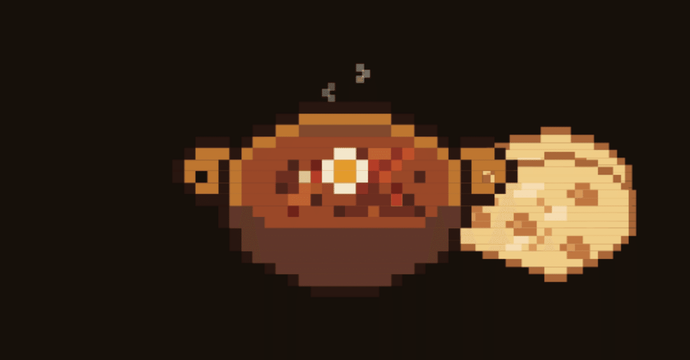
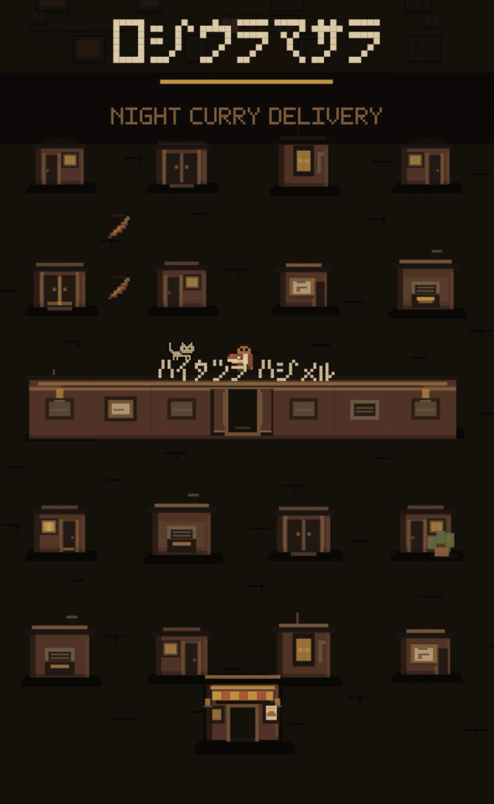
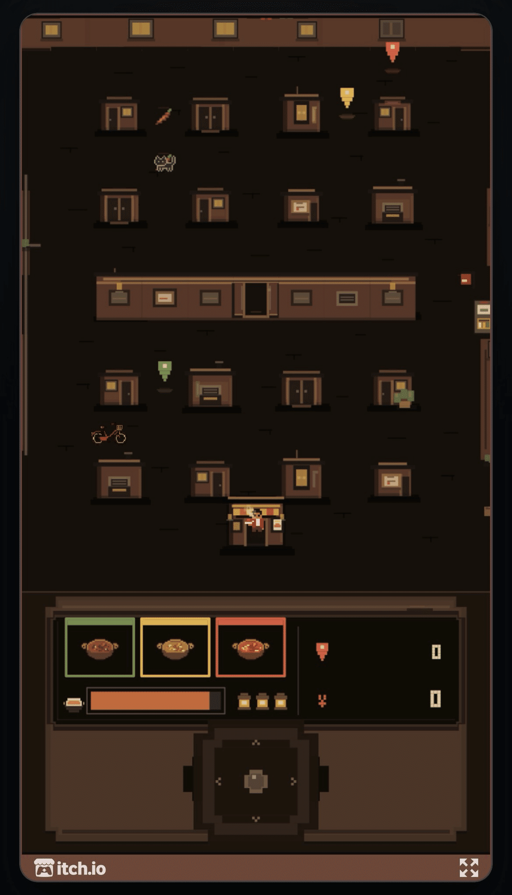
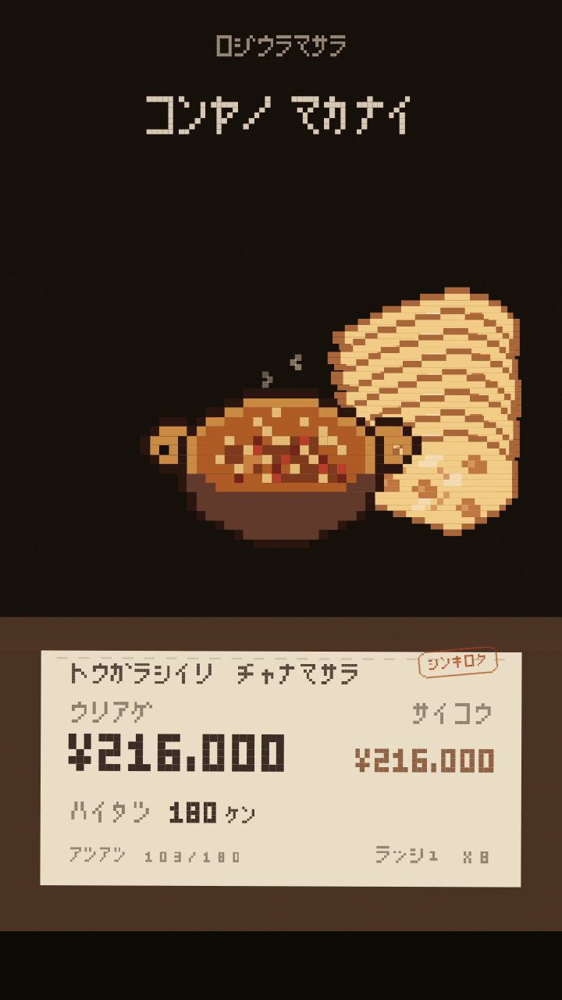

ゲームジャムで、カレーを配達した
Ultimate AI-Powered Game Jam #3に参加して、
『路地裏マサラ』というゲームを作った。
テーマは「CURRY」と「PEPPER」。
路地裏の小さなカレー屋から、
冷める前に街を走って配達を続ける。
自転車を避けたり、猫に邪魔されたりしながら、
道に落ちている唐辛子を集める。

カレーは冷める
ここ最近、ドット絵をよく触っていた。
DotWeatherのような小さな画面を作りながら、
「一度、ちゃんとドット絵のアクションゲームを作ってみたい」
と思うようになっていた。
特に好きなのは、子供の頃に遊んだような、
単純操作を何度も繰り返すゲームだった。
そんなとき、
ちょうどゲームジャムのテーマに
「CURRY」と「PEPPER」が来た。
ただ、カレーや唐辛子を置くだけにはしたくなかった。
そこで考えたのが、「カレーは冷める」ということだった。
店で料理を受け取って、街を走る。
冷める前に届けて、また店に戻る。
これなら、街を何度も往復することに自然な理由ができる。
唐辛子を集めて、熱いうちにカレーを届けると、
急に「MASALA RUSH」が始まる。
静かな夜の路地で、いきなりBGMが変わり、街ごと踊り出す。
その少し馬鹿っぽい感じが好きだった。

一晩働いたら、何か食べたい
もう一つ考えたのが、ゲームの最後だった。
普通なら、配達数や売上だけが並ぶスコア画面になる。
でも、カレー屋で一晩働いたなら、
「今日もお疲れ」と最後に何か食べさせてもらいたくなった。
そこで、結果画面を「今夜のまかない」にした。
どんな働き方をしたかによって、最後に出てくる料理が変わる。
ゲームを終えたあとに残るのが、
数字だけではなく料理のドット絵。
このゲームには合っている気がした。

自分が作ったゲームがどんなものか
完成して公開すると、いろいろなコメントをもらった。
「パックマンみたい」
「ゲームボーイっぽい」
「アーケード筐体で遊びたい」
狭い街を先を読んで走って、同じ場所を何度も往復する。
自分が昔好きだったゲームの感触が残っていたようで嬉しかった。
ほかにも、
「刺激の強いゲームが多い中で、自分のペースで夜を走れるのが落ち着く」と言ってくれた人がいた。
一方、「MASALA RUSHが爽快」「猫が一緒に踊るのが楽しい」という声もあった。
静かな時間と、急に騒がしくなる時間。
自分が好きで入れたものが、思っていた以上にちゃんと伝わっていた。
『路地裏マサラ』を作っている間、
見ていたのは細かいことばかりだった。
少しクセのある、滑るような操作感。
急に街中が踊りだす演出。
唐辛子の並べ方。
一つずつ「こっちの方が好き」という方へ寄せていった。
この積み重ねが、それぞれの記憶の中の
レトロゲームと紐付いたのであれば嬉しい。
そして結果発表では、22作品中2位だった。
テーマに沿っていることが評価されたようだ。
CURRYとPEPPERを、どう無理なく一つのゲームにするか。
そこを一番悩んだので、この結果は嬉しかった。